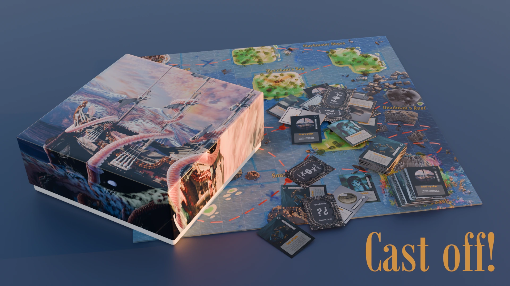
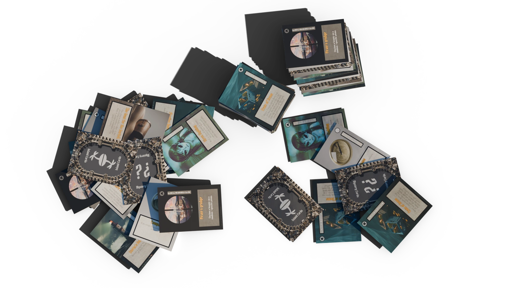
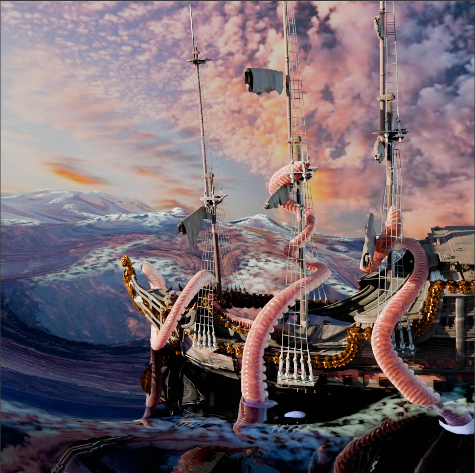

A competitive 2-4 player board game, suitable for all ages, with gameplay mechanics inspired by multiple existing board games such as Mario Party, Ultimate Chicken Horse, and F1 car racing. The board game takes place in the stars, with players traversing the Ocean as pirates on their boats. Pirates are to voyage the treacherous stars and gather as much gold as treasure they can hoard, battle against other crews, and survive the dangers of the sea. The pirate with the highest bounty wins, and finishes their loot! The board game encourages players to use both their luck & wits, strategizing and utilizing whatever items provided that could either bring advantages or obstruct players.
